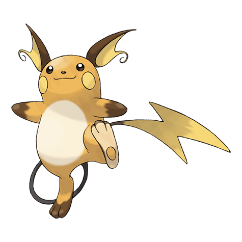

Райчу

Райчу — Покемон 1 поколения под номером 26 в Покедекс. Обитает он в регионе Канто и относится к Электрическому типу. Это финальная стадия эволюции Покемона Пикачу. Если электрические мешочки Райчу становятся чрезмерно заряженными, этот Покемон вонзает хвост в землю и разряжается. Рядом с гнездом этих Покемонов можно найти выжженные участки земли.
Тип и слабости:
Электрический
Эволюция
# 026 Райчу
Финальная стадия